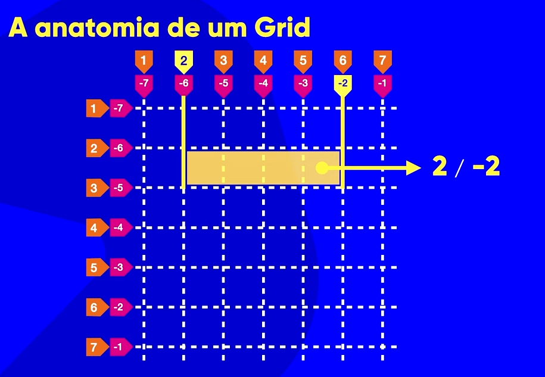

Grid Layout é um sistema de layout que permite criar layouts complexos e flexíveis com facilidade.
O Grid Layout é composto por:
Quando eu falo que um grid é 6X6, eu estou falando que o grid tem 6 colunas e 6 linhas (tracks) e não apenas linhas por si só (grid lines).
Elas podem ser numeros negativos ou positivos, e podem ser nomeadas pelo desenvolvedor.
Se for negativo é so inverter a ordem
É mais lógico usar dessa forma pois ao inves de falar que uma área vai da linha vertical 2 até a 6 eu posso dizer que vai da 2 até a penultima (ou -2). Olhar exemplo abaixo

Posso usar também usar o Gap para definir o espaçamento entre os tracks.
O display: grid é um display que transforma o elemento em um grid.
O elemento pai se torna o container e os elementos filhos se tornam os items.
No google dev tools eu posso, ao selecionar o elemento pai, clicar no botão "Display: grid" e ver o resultado. Posso também usar o botão de grade para alterar meu grid e ver o resultado.
A propriedade grid-template-columns define o número de colunas do grid e o tamanho de cada coluna.
A propriedade grid-template-rows define o número de linhas do grid e o tamanho de cada linha.
A propriedade grid-template-areas define o nome de cada área do grid.
A propriedade align-items define o alinhamento dos itens no eixo vertical.
A propriedade justify-items define o alinhamento dos itens no eixo horizontal.
A propriedade align-content define o alinhamento dos itens no eixo vertical.
A propriedade justify-content define o alinhamento dos itens no eixo horizontal.
A propriedade grid-auto-rows define o tamanho de cada linha sempre que for adicionado um novo item na linha de baixo. Eu defino quantos pixels cada linha vai ter.
A propriedade grid-auto-columns define o tamanho de cada coluna sempre que for adicionado um novo item na coluna do lado. Eu defino quantos pixels cada coluna vai ter.
place-items: alinhamento horizontal e vertical.
place-content: alinhamento horizontal e vertical do container.